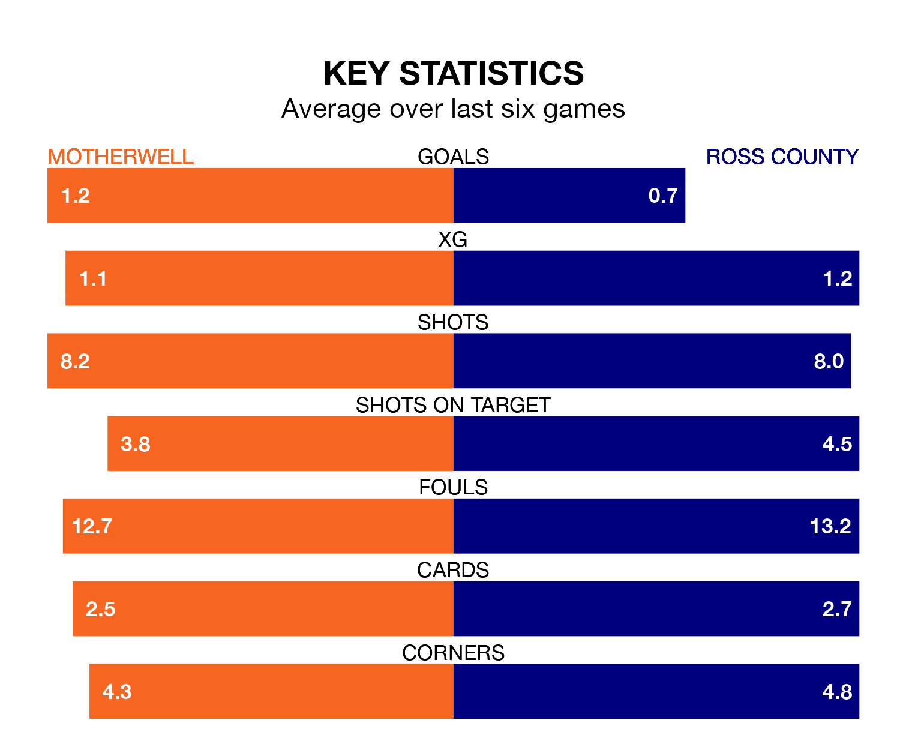

Tuesday's late match at Fir Park sees two relegation candidates play each other, as 10th-ranked Motherwell host 11th-placed Ross County.
Motherwell have picked up 22 points from their first 22 Premiership games, with four wins and 10 draws.
That is three points more than the Staggies have collected, having won four and drawn seven.
Motherwell are in mixed form in Premiership, with one win and four draws from their last six games.
With no wins and two draws over that period, Ross's form is worse – they have taken two points from 18, compared to the home team's seven.
In the last 10 years, Motherwell and Ross have played each other on 35 occasions. Motherwell won 17 of them, Ross 11, and they drew seven times.
On average, Motherwell scored 1.7 goals and the Staggies 1.3 in those matches.
Their last meeting was on December 5, when Ross won 3-0 at home.
With 19 goals in 22 games so far this season, County are the league's third-lowest scorers with 0.9 goals per game. And they are conceding more than average, letting in 33 goals at a rate of 1.5 per game.
Motherwell are also below average scorers, with 1.2 goals per game, compared to a league average of 1.3. They have conceded 1.6 goals per game.
Motherwell's Blair Spittal is among the league's most creative players, racking up seven assists in 23 appearances so far this season, and holding third spot in Premiership's assist charts.
For the Staggies, Yan Dhanda has set up the most goals, having laid on three assists in 22 games.
Motherwell's last match was on Saturday, a 1-1 draw against Kilmarnock, with Thelonius Bair getting the goal for Motherwell.
Ross lost 1-0 against St. Johnstone last time out, also on Saturday.
Updated: 14:59 (UTC), 05/02/24